操作系统¶
- 操作系统：充当计算机用户和计算机硬件之间中介的程序（
a resource abstracter and a resource allocator）
- 资源分配器
- 管理所有资源
- 在冲突的请求之间做出决定，以实现高效和公平的资源使用
- 控制程序：控制程序的执行，以防止错误和不当使用计算机
- 操作系统的目标
- 执行用户程序并使解决用户问题更容易
- 使计算机系统便于使用
- 以高效的方式使用计算机硬件
- 操作系统的操作：终端驱动
- 硬件中断：来自外部I/O设备
- 软件中断：软件程序错误；系统服务请求；其他进程问题（如无限循环、非法修改内存）
任务¶
- 进程管理
- 进程：一个正在执行的程序，是系统内的工作单元
- 程序是一个被动实体，进程是一个主动实体
- 进程需要资源来完成其任务：CPU、内存、I/O、文件；初始化数据
- 通常系统有许多进程（用户的/操作系统的），在一个或多个CPU上并发运行，通过在进程间多路复用CPU来实现并发
- 内存管理
- 执行程序：所有/部分指令必须在内存中；程序需要的所有/部分数据必须在内存中
- 内存管理决定：内存中存放什么；何时优化CPU利用率和计算机对用户的响应
- 存储管理
-
OS提供统一且逻辑的信息存储视图
- 将物理属性抽象为逻辑存储单元——文件
- 每个介质由设备控制（即磁盘驱动器、磁带驱动器）
Abstract
不同的属性包括访问速度、容量、数据传输速率、访问方法（顺序或随机）
-
文件系统管理
- 文件通常组织成目录
- 大多数系统上有访问控制，以确定谁可以访问什么
- I/O子系统
- OS的目的：向用户隐藏硬件设备的特性
- I/O子系统负责
- I/O的内存管理
- 缓冲：在数据传输过程中临时存储数据
- 缓存：将部分数据存储在更快的存储中以提高性能
- 假脱机：将一个作业的输出与另一个作业的输入重叠
- 通用设备驱动程序接口
- 特定硬件设备的驱动程序
- I/O的内存管理
- 保护与安全
- 保护：任何控制进程或用户对OS所定义资源的访问的机制
- 安全：防御系统免受内部和外部攻击（范围广泛，包括拒绝服务、蠕虫、病毒、身份盗窃、服务窃取）
- 系统通常首先区分用户，以确定谁可以做什么
结构¶
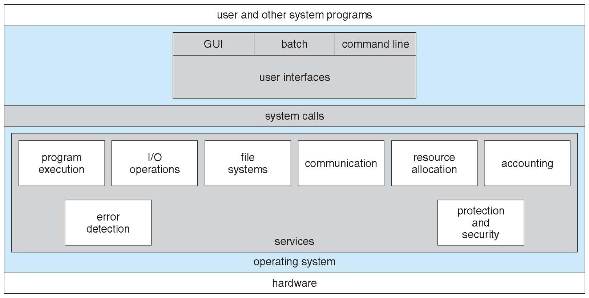
操作系统¶
服务
- 用户
- 程序执行：加载并运行程序；允许程序以多种方式结束 e.g.带有错误代码
- I/O 操作：允许程序访问I/O设备
- 文件系统：
- 提供文件/目录摘要
- 允许程序创建/删除/读取/写入文件
- 实现文件的权限管理
- 通信：支持进程间通信 e.g.共享内存、信息传递
- 错误检测：在硬件、I/O或用户程序异常时提供保护机制并采取行动
- 更好的效率/操作
- 资源分配：决定哪个进程何时获得哪个资源 e.g.CPU、内存、I/O设备
- 记账accounting：跟踪记录每个用户对资源的使用情况
- 可以施加限制
- 对统计很有用
- 保护与安全：
- 控制对资源的访问
- 强制所有用户进行身份验证
- 允许用户保护他们的内容
用户与操作系统界面¶
- 命令行界面 CLI
- 定义：也被称为命令解释器，允许直接输入命令
- 有时实现在内核中，有时以系统程序的形式存在
- 通常有多种不同的形式
shellse.g. Linux: Bash/Zsh/Fish - 主要功能：从用户那里获取命令并执行
- 命令的来源与扩展
- 有些命令内置于
shell程序内部 e.g.cd - 有些是外部程序的文件名 e.g.
ls、gcc - 如果是后者（调用外部程序），添加新功能时就不需要修改或重新编译
Shell程序本身
- 有些命令内置于
- 图形用户界面 GUI
- 提供一个用户友好的桌面
- 通常使用鼠标、键盘和显示器进行交互
- 图标
icons代表文件、程序、操作等系统实体 - 在界面中对对象使用不同的鼠标按钮来触发各种动作
- 现在的许多系统同时包含CLI和GUI
Windows：以GUI为主，同时包含CLI外壳commandmacOS：Aqua GUI界面，其底层是UNIX内核，并提供Shell命令行界面Unix&Linux：以CLI为主，拥有可选的GUI界面（e.g.CDE、KDE、GNOME）
- 触摸屏界面：手势进行操作和选择，虚拟键盘进行文本输入，语音命令
系统调用¶
- 定义：操作系统所提供服务的编程接口
- 特点：
- 是用户程序与操作系统内核进行通信的唯一途径
- 通常使用高级语言编写
C/C++
- 应用程序编程接口 API
- 程序通常通过API来访问系统服务，而不是直接使用底层的系统调用
- 三种常见的API
- 用于 Windows 系统的
Win32 API - 用于基于 POSIX 标准的系统的
POSIX API（包括所有版本的 UNIX、Linux 和 Mac OS X） - 用于 Java 虚拟机 (JVM) 的
Java API
- 用于 Windows 系统的
Example
| C | |
|---|---|
printf是write系统调用的包装器- C语言程序调用
printf()库函数，而这个库函数内部又会去调用write()系统调用
- 实现
- 系统调用表
- 每个系统调用都有一个唯一的系统调用号
- 在内核中存储成数组，下标是系统调用号，内容是对应系统调用处理函数的指针
- 触发系统调用
- 准备参数：将系统调用号移动到寄存器
%eax中 - 执行
syscall指令（x86_64架构）：CPU从用户态切换到内核态
- 准备参数：将系统调用号移动到寄存器
- 内核处理
kernel_entry：内核的入口代码（保存所有用户空间寄存器的值）- 内核根据系统调用号，在系统调用表中找到对应的处理函数并执行
ret_to_user：内核的出口代码（恢复用户空间寄存器的值，CPU从内核态切换回用户态）
参数传递
- 寄存器传递：最简单（但是某些情况下参数可能多于寄存器）
- 内存块/表传递：参数存储在内存中的一个块/表中，并将块的地址作为参数在寄存器中传递 e.g.
Linux、Solaris
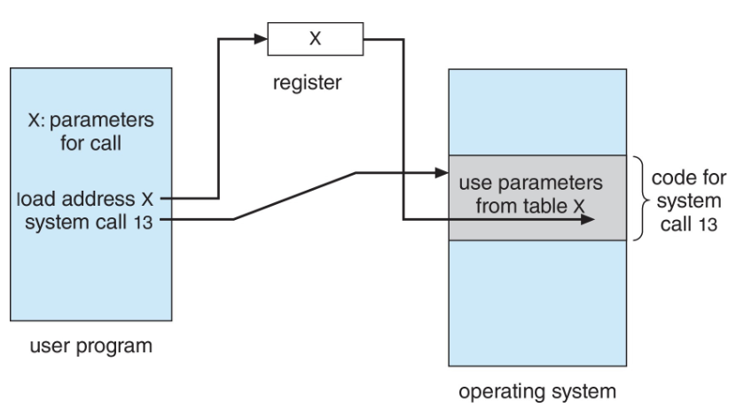
- 栈传递：参数由程序放置或push到stack上，并由操作系统从栈中pop
- 后两种方法不限制传递参数的数量和长度
- 使用和观察
strace（Linux）：追踪程序运行过程中发出的所有系统调用- 用途：诊断程序卡死和出错的原因
dtruss（MacOSX）
time：粗略测量程序运行时间real：实际流逝的时间user：程序在用户态花费的CPU时间sys：程序在内核态（即执行系统调用）花费的CPU时间
- 类型
| 进程控制 | 文件管理 | 设备管理 |
|---|---|---|
| 1. 创建/终止进程 2. 加载/执行 3. 获取/设置进程属性 4. 等待时间、等待/通知事件 5. 分配/释放/出错时转储内存 6. 调试器：调试错误/单步执行 7. 锁：管理进程间共享数据的访问 |
1. 创建/删除文件 2. 打开/关闭文件 3. 读/写/重定位文件 4. 获取和设置文件属性 |
1. 请求/释放设备 2. 读取、写入、重定位 3. 获取和设置设备属性 4. 逻辑连接/断开设备 |
| 信息维护 | 通信 | 保护 |
| 1. 获取/设置时间或日期 2.获取/设置系统数据 3.获取和设置进程、文件或设备属性 |
1. 创建/删除通信连接 2. 消息传递模式： 在主机名或进程名之间发送和接收； 从客户端到服务器 3. 共享内存模式：创建内存区并获取访问权限 |
1. 控制对资源的访问 2. 获取和设置权限 3. 允许和拒绝用户访问 |
为何应用程序依赖于特定操作系统
- 核心原因：不同操作系统的系统调用接口和可执行文件格式不兼容
- 跨平台策略：
- 解释型语言：依赖跨平台的解释器
- 虚拟机语言：依赖跨平台的虚拟机 e.g. Java(JVM)
- 源代码移植：使用标准语言编写，但在每个目标平台重新编译
系统服务¶
- 定义：也称为系统程序，为程序开发和执行提供了便利环境
- 分类
- 文件操作：创建、删除、复制、重命名、打印、转储、列出及文件目录的通常操作
- 文件修改
- 用于创建和修改文件的文本编辑器
- 用于搜索文件内容或执行文本转换的特殊命令
- 状态信息（有时存储在文件中）
- 一些向系统询问信息——日期、时间、可用内存量、磁盘空间、用户数量
- 其他提供详细的性能、日志记录和调试信息
- 通常这些程序格式化输出并将其打印到终端或其他输出设备
- 特殊机制：一些系统（Windows）使用注册表来集中存储和检索配置信息
- 编程语言支持：有时提供编译器、汇编器、调试器和解释器
- 程序加载与执行：加载器和链接器
- 包括：绝对加载程序、可重定位加载程序、链接编辑器和覆盖加载程序，用于高级语言和机器语言的调试系统
- 通信：提供在进程、用户和计算机系统之间创建虚拟连接的机制
- 允许用户相互发送消息到屏幕
- 浏览网页、发送电子邮件消息、远程登录
- 从一台机器传输文件到另一台机器
- 后台服务
- 也称为服务、子系统、守护进程
- 在系统启动时自动启动（有些用于系统启动，然后终止；有些从系统启动到关闭一直运行）
- 提供如磁盘检查、进程调度、错误记录、打印等服务
- 在用户上下文中运行，而不是内核上下文（意味着其崩溃了通常不会导致整个系统崩溃）
- 应用程序
- 与系统无关，由用户运行，通常不视为操作系统的一部分
- 通过命令行、鼠标点击、手指点击启动
链接器与加载器¶
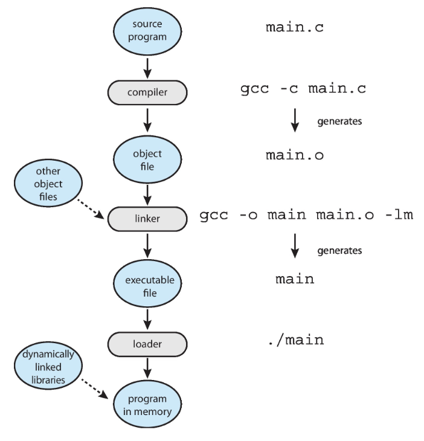
- 作用
- 编译器：将高级语言翻译成机器代码，生成目标文件
main.o - 链接器：将多个目标文件和库打包成一个可执行文件
main - 加载器：将可执行文件从磁盘读入内存，并创建一个可以执行的进程
Tips
现代通用系统不将库链接到可执行文件中，而是动态链接库（在 Windows 中为 DLL）在需要时加载，所有使用相同版本相同库的程序共享该库（只加载一次）
ELF文件格式
- 定义：可执行与可链接格式
main -
组成
- 程序头表和节头表
.text: 代码.rodata: 已初始化的只读数据 e.g. 静态常量.data: 已初始化的全局变量和静态变量.bss: 未初始化的全局变量和静态变量（这个段在文件中不占实际空间，只是在程序加载时分配相应大小的内存并初始化为0）
-
readelf -S a.out：查看ELF文件的所有段 objdump -d a.out：反汇编.text段，查看机器指令
-
ELF文件运行
-
静态链接：不需要
loader来加载库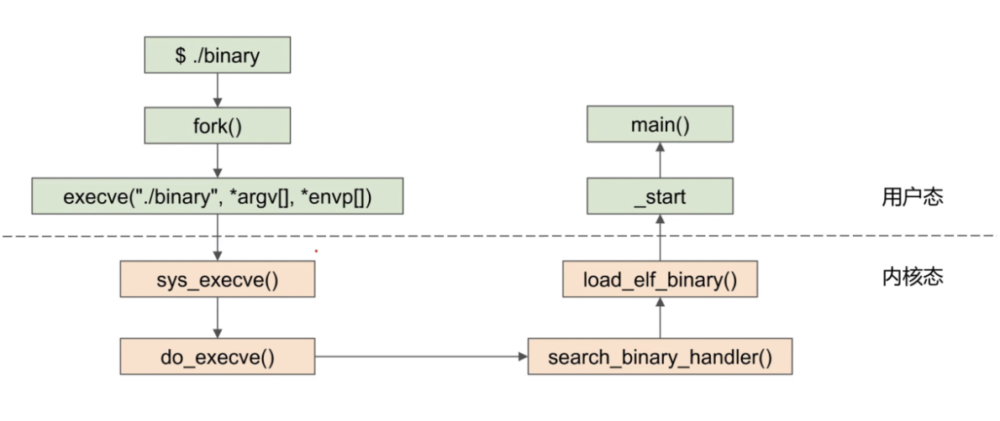
-
动态链接：需要
loader来加载库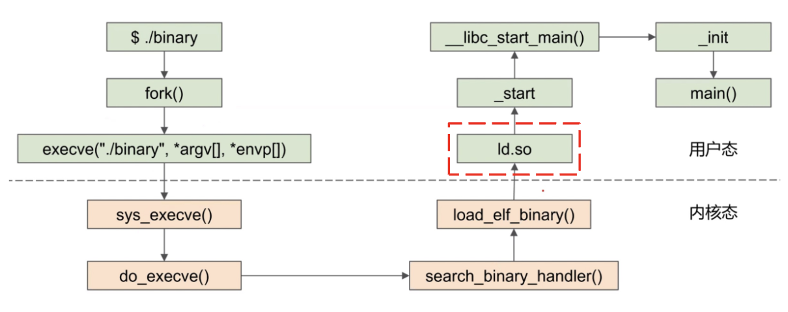
- 进程的内存布局（从低地址到高地址）
- 文本段（Text Segment）：
.text只读 - 数据段（Data Segment）：
.data+.bss - 堆（Heap）：用于动态内存分配（如
malloc），向高地址增长 - 内存映射段（Memory Mapping Segment）：映射了动态共享库以及用户创建的内存映射文件
- 栈（Stack）：用于函数调用，存放局部变量等，向低地址增长
- 内核空间（Kernel Space）：为内核保留，用户程序无法直接访问
note
- 设置
ELF文件映射：内核 - 设置栈和堆：内核
- 设置库：加载器
OS 设计与实现¶
- 核心原则：策略（做什么）与机制（如何做）分离
- 实现：通常是多种语言的混合
- 最低层次：汇编语言
- 主体部分：C语言
- 系统程序：C语言、C++, 以及脚本语言（如PERL、Python、Shell脚本）
OS 结构¶
构建方式¶
-
简单结构：
MS-DOS -
单体系统：如 Unix, Linux
- 原始 Unix 组成（可分离）
- 系统程序
- 内核：
- 包含系统调用接口之下、物理硬件之上的一切
- 提供文件系统、CPU 调度、内存管理和其他操作系统功能
- 大量功能集中于一个层次
-
传统 Unix：仍未完全分层
传统 Unix 结构
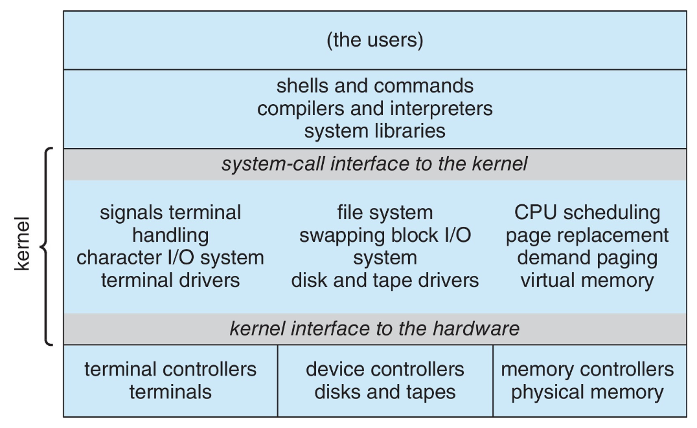
-
Linux 系统结构：本质是单体系统，但支持可加载内核模块 (
LKMs)，增加了灵活性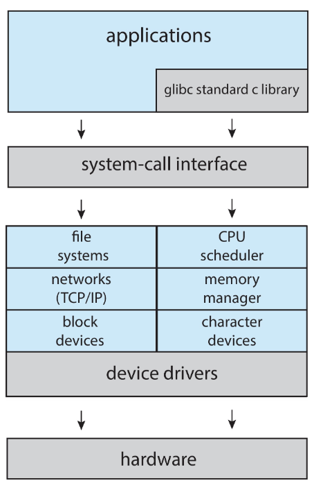
模块化
- 许多现代操作系统实现了可加载内核模块 (LKMs)
- 特点
- 使用面向对象方法
- 每个核心组件是分离的
- 每个组件通过已知接口相互通信
- 每个都可以根据需要在内核中加载
- 与分层类似，但更灵活
- e.g.
Linux、Solaris等
- 分层系统：基于抽象层次
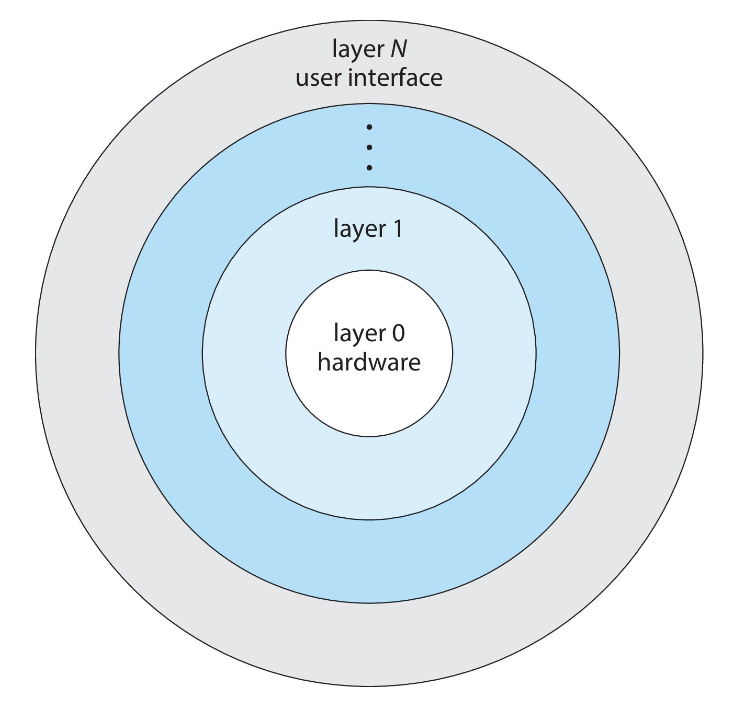
- 操作系统被划分为若干层，每一层构建在较低层之上
- 最底层（0）是硬件；最高层（N）是用户界面
- 通过模块化选择各层，使得每一层仅使用更低层级的函数（操作）和服务
- 微内核
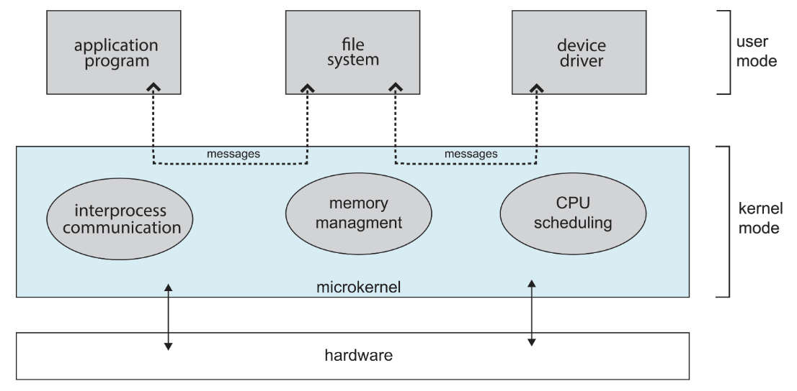
- 设计思想：将尽可能多的功能从内核移入用户空间
- 实例：
Mach（Mac OS X的Darwin内核部分基于它） - 通信方式：用户模块间通过消息传递进行通信
- 缺点：开销比较大，效率比较低，因为用户空间和内核空间之间需要消息传递
- 优点：更模块化，容易扩展和移植到新架构，容易开发和维护，更稳定可靠和安全
- 混合内核：大多数现代OS并非纯粹模型，而是混合系统，以兼顾性能、安全、可用性
常见OS¶
- Linux & Solaris：主要是单体内核（位于内核地址空间），同时兼具模块化以支持功能动态加载
- Windows：主要是单体内核，同时为不同子系统个性化地使用微内核
- macOS & iOS：混合+分层
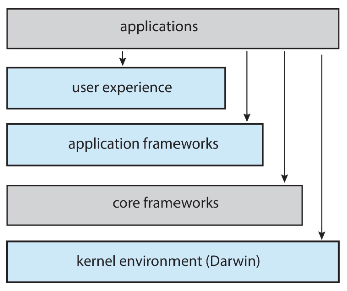
- 上层：丰富的用户体验（Aqua UI）和框架（Cocoa）
- 内核层（Darwin）：混合体，包含
Mach微内核、BSD Unix部分、I/O工具包和动态可加载的内核扩展
- Android：
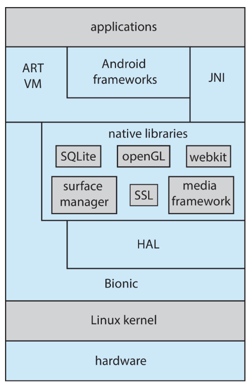
- 栈：与
iOS相似 - 基于
Linux内核但是加以修改：- 提供进程、内存、设备驱动管理
- 增加了电源管理
- 运行时环境：核心库集+
Dalvik虚拟机 - 应用开发：
Java+Android API - 库：
Web浏览器 (webkit)、数据库 (SQLite)、多媒体等框架以及更小的libc
- openEuler：
EulerOS是一个基于Linux的服务器操作系统，主要维护者是华为
构建与启动 OS¶
- 构建 Build
- 编写操作系统源代码
- 为将要运行的系统配置操作系统
- 编译操作系统
- 安装操作系统
- 启动计算机及其新的操作系统
构建与启动 Linux
- 下载 Linux 源代码
- 通过
make menuconfig配置内核 - 使用
make编译内核
- 生成
vmlinuz（即内核映像） - 通过
make modules编译内核模块 - 通过
make modules_install将内核模块安装到vmlinuz - 通过
make install在系统上安装新内核
- 启动 Boot
- 当系统加电初始化时，执行从一个固定的内存位置开始
-
引导加载程序加载内核
引导加载程序
- 作用：用于定位内核，将其加载到内存，并启动它
- 常见引导加载程序：
GRUB（允许从多个磁盘、版本、内核选项中选择内核） - 引导加载程序通常允许各种启动状态，例如单用户模式
-
内核加载后，系统开始运行
OS 调试¶
- 调试方法
- 日志文件：OS生成，包含错误信息
- 核心转储文件：应用程序崩溃时生成，捕获进程内存状态
- 崩溃转储文件：OS崩溃时生成，捕获内核内存状态
- 性能调优：优化系统性能
- 跟踪列表：记录活动序列以供分析
- 性能分析：周期性采样指令指针，以发现统计趋势
- 跟踪工具
strace：跟踪进程调用的系统调用gdb：源代码级调试器perf：Linux性能工具集tcpdump：收集网络数据包